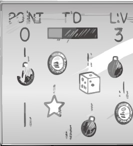

Tema 2: Grundlæggende web / Computersite

Billedet viser det færdige webprojekt og dokumenterer HTML-struktur, navigation og visuelt layout.
Hvad: Et computersite med flere sider, navigation, tekst og billeder.
Hvorfor: Projektet viser grundlæggende webudvikling med HTML, CSS og filstruktur.
Hvordan: HTML bruges til struktur, og CSS bruges til layout, farver, typografi og responsivt design.
Læring: Jeg lærte, hvordan struktur og styling arbejder sammen i et website.
Dette projekt viser fundamentet for resten af semesteret: struktur, layout og navigation.